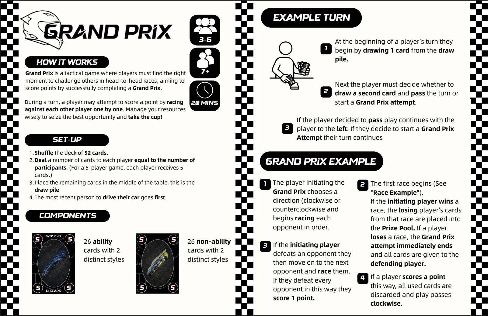
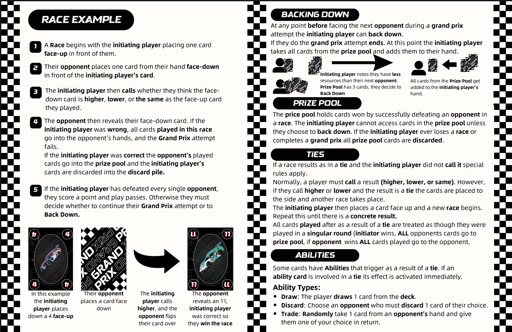

Grand Prix is a strategic card game that blends bluffing mechanics with consecutive 1v1 racing duels. Players must carefully manage resources, read opponents, and strike at precisely the right moment to secure victory. I was the lead designer for this project and led all of the playtesting and gameplay iteration.
I am fascinated by the concept of “Punting”. I think that football is one of the most well designed games of all time and punting is a core reason why. On paper it seems like a horrible decision, why would you willingly give the initiative and power to score to the other team? Why wouldn’t you just go try and score yourself? The way that football works encourages teams to punt to avoid things from getting any worse and prevent their opponents from getting favorable positions.
I wanted to create a game that features punting as both a mechanic that was not just viable, but felt strategic. In doing so I created the card game Grand Prix. The core mechanic is stockpiling resources and striking at the right moment to duel every other player successively. If at some point you run low on resources before defeating everyone you may punt, and keep your winnings instead of starting back over from zero. A majority of the development time was spent playtesting, gathering feedback, and finally iterating and fine tuning the mechanics until they were fun, intuitive and easy to learn. What we were left with was a fast-paced pub style card game that produces epic moments when someone finally pulls off a full grand prix.
 